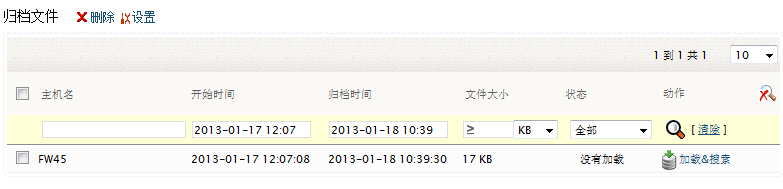
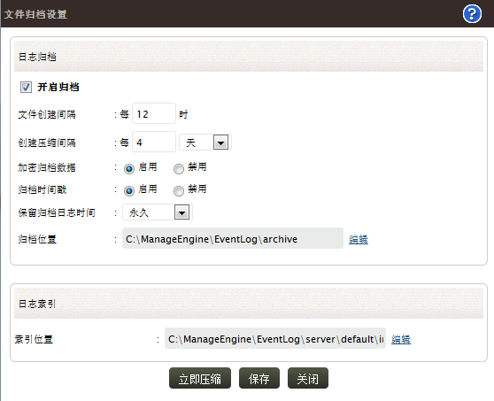

归档
EventLog Analyzer处理的日志文件会被定期的归档，以便用于内部、鉴定和合规性审计。归档的周期和保存时间是可配置的，同时归档文件可被加密和添加时间戳，使之安全可靠，防止出现篡改。

归档文件页面列出了所有归档的文件信息，它包括归档的主机、开始归档的时间、完成归档的时间、归档文件的大小、文件的加载状态以及您可以对文件执行的动作选项。如果归档的文件过多，执行手动查看或选择出现困难，您可以使用搜索选项（点击搜索图标）来过滤需要的文件。
怎样删除归档文件？
1a. 选择要删除的归档文件对应的复选框。
1b. 点击删除菜单链接即可删除所选的归档文件。
怎样从归档文件生成报表？
-
查看归档文件的加载状态，如果显示“没有加载”，点击“加载&搜索”动作将文件加载到数据库，然后搜索日志。
-
如果文件的状态为“已校验”，点击“搜索”链接来搜索文件中的日志，如果您想要从数据库中删除这些数据，点击“删除数据库”链接。
归档设置
您可以在归档设置下设置归档的周期、保留时间、加密以及时间戳。

-
首先请启用归档，缺省已启用，取消复选按钮即可禁用归档。
-
配置归档文件的创建间隔（日志文件从数据库写入到无格式文件的间隔），缺省值为12小时。
-
配置无格式文件压缩（20:1比率）和zip文件创建的时间间隔，缺省值为4天。
-
要加密归档文件，请启用加密归档文件数据选项，缺省为禁用状态。
-
要创建归档文件时间戳，请启用归档时间戳选项，缺省状态为禁用。
-
选择日志保留时间段，缺省值为“永久”。
-
归档文件的缺省存储位置，要修改此位置，请点击位置字段旁边对应的编辑链接。
-
日志索引的缺省位置，要修改此位置，请点击位置字段旁边对应的编辑链接。
保存设置，关闭设置窗口。要立即开始归档，点击“立即压缩”按钮。
|